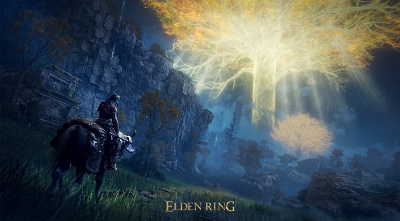
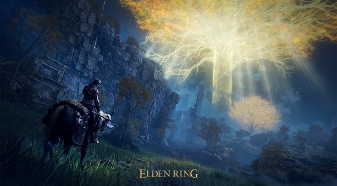

Mande suas screenshots para participar do concurso
Abaixo temos algumas imagens do concurso de screenshots.
Tente ser criativo e aproveite ao maximo o cenario incrivel que o jogo possui!.


O NOVO RPG DE AÇÃO E FANTASIA.
Levante-se, Maculado, e seja guiado pela graça para portar o poder do Anel Prístino e se tornar um Lorde Prístino nas Terras Intermédias.
Um mundo vasto e emocionante
Um mundo vasto onde campos abertos e uma variedade de situações e masmorras imensas, com complexos designs tridimensionais se conectam com fluidez. Conforme explora, sinta a alegria de descobrir poderosas e desconhecidas ameaças que aguardam por você, levando a um grande senso de conquista.
Crie seu próprio personagem
Além de personalizar a aparência do seu personagem, você pode combinar livremente armas, armaduras e magias que equipar. Você pode desenvolver seu personagem de acordo com seu estilo de jogo, como aumentar a força muscular para se tornar um poderoso guerreiro, ou dominar a magia.
Um drama épico nascido de um mito
Uma história cheia de camadas, contada em fragmentos. Um drama épico onde os vários pensamentos dos personagens se interligam nas Terras Intermédias.
Jogo on-line único que conecta você livremente aos outros
Além do multijogador, onde você pode se conectar diretamente com outros jogadores e viajarem juntos, o jogo suporta um elemento on-line assíncrono único que permite que você sinta a presença dos outros.
Abaixo vemos o mapa do jogo completamente liberado!
Voce pode usa-lo para se guiar em sua jornada.
O jogo pode ser encontrado em diversas plataformas algumas delas podem ser.
Steam para jogadores do computador
Playstation Para jogadores de playstation
Xbox para jogadores de xbox
Vamos lembrar que cada plataforma tem seu respectivo servidor não contendo crossplay.
Abaixo temos algumas imagens do concurso de screenshots.
Tente ser criativo e aproveite ao maximo o cenario incrivel que o jogo possui!.
